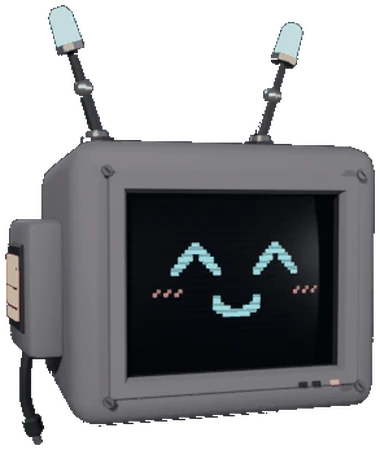

HALCYON CORPORATION · DIVISIÓN DE CONTINUIDAD
Manual del sujeto
USO
INTERNO
si estás leyendo esto, funcionó :)
me colé en su página. léelo rápido
01 Desplazamiento
El sujeto se desplaza en primera persona. Las teclas pueden variar según la versión del equipo [POR CONFIRMAR].
02 Las dos manos
Un desvío a tiempo regresa el proyectil a quien lo disparó. Un desvío tarde no sirve de nada.
03 Superficies verticales
No se puede volver a la misma pared sin antes tocar otra.
04 Ciclos
05 Unidad de estabilización

- Designación
- UNIDAD E-07[SU NOMBRE]
- Función
- Mantiene estable la conciencia del sujeto durante la carga.
- Advertencia
- Si la unidad se corrompe o se desconecta, el entorno colapsa. No interactuar con ella fuera de protocolo.
esa soy yo. no soy una "unidad"
06 Acceso a documentación
Los documentos internos se consultan escribiendo su clave después de la dirección del sitio.
jorge3023.github.io/LYO_Web/help
así abriste esta. hay más.
una barra y una palabra. no se lo digas a nadie